A loud, 90s-Memphis pocket synth & groovebox for your 3DS.
Synths with googly-eyed mascots, seven drum kits, a sampler that chops your voice into beats, a piano roll, a mixer, sixteen punch-in effects and a 4-track tape. All on an original 3DS, in stereoscopic 3D, dancing to what you play.
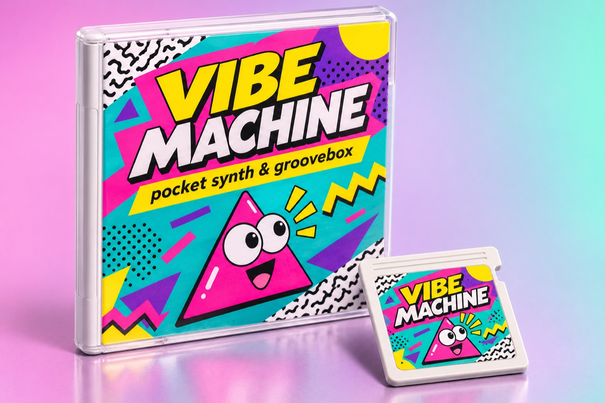
Every feature, one at a time: the keys, the sequencer, all the sounds, EDIT, the drum kits, the sampler, PUNCH, the mixer, the tape, a mixdown. About 5 minutes, with sound.
Drums, bass, chords, a lead, a mix, a variation, an arrangement, saved and mixed down to a WAV, in 2½ minutes.
Both videos are the app playing itself: a scripted build taps through the real touchscreen code and records its own screens and sound.
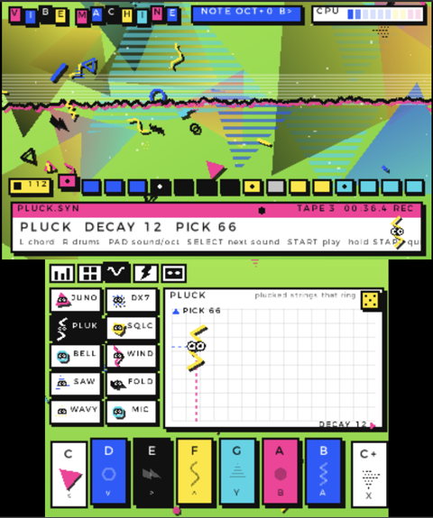
Nineteen of its own: plucked strings, acid bass, FM bells, a supersaw, an 808 boom, a drawbar organ, a vowel choir, chiptune and more, plus 128 Juno-6 and 128 DX7 patches. Drag the mascot around the pad to play its two macros.
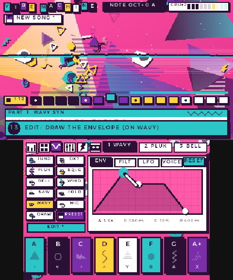
Draw a sound's envelope, play its filter and LFO on XY pads, make it mono with glide, stack unison, brighten a DX7, MUTATE it, store A and B and MORPH between them. Keep what you make as presets.
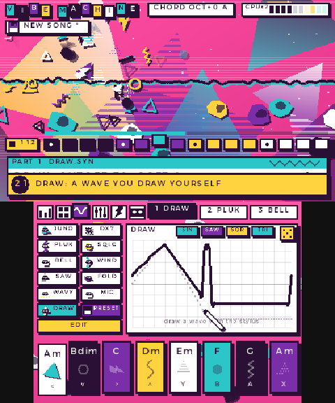
Drag the stylus across the pad and play the shape you drew on the keys. It changes while the note is still sounding.
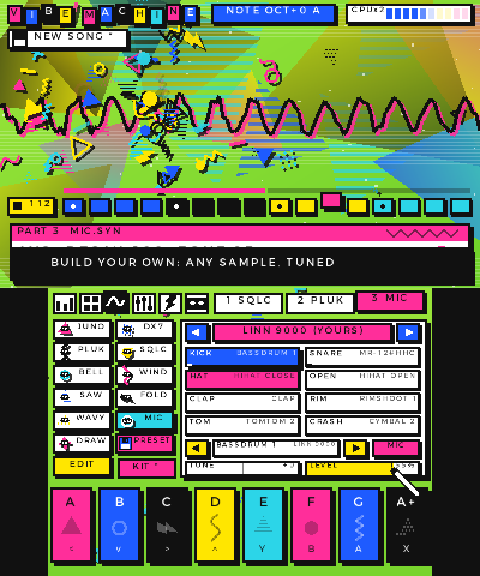
TR-808, TR-909, Linn 9000, MR-12, Tokyo Synthetics, Power and Percussion. Or build your own from any of 155 samples, or your own recordings, tuned and levelled.
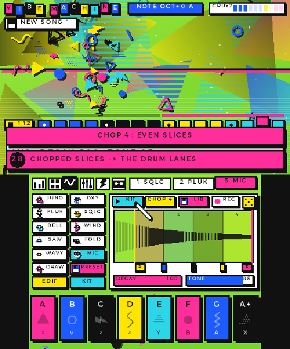
Record your voice or grab a bar from the tape. CHOP cuts it at the hits, each key plays a slice, and one tap puts the slices on the drum pads.
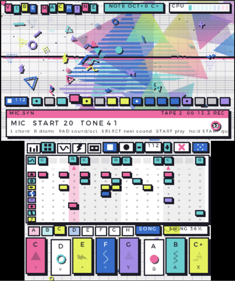
Sixteen steps, eight drum lanes, accents and swing, a piano roll for melodies and chords, patterns of 1–4 bars, an arpeggiator and a song sheet to arrange it all.
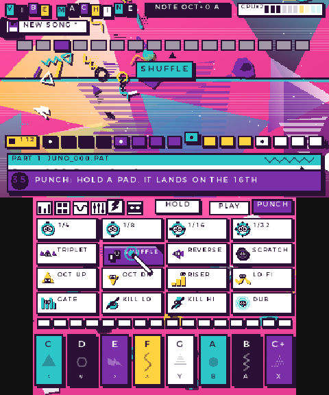
Hold a pad and the beat loops, reverses, shuffles, gates, drops an octave or throws into a dub echo, always on the next 16th. Sequence them on steps.
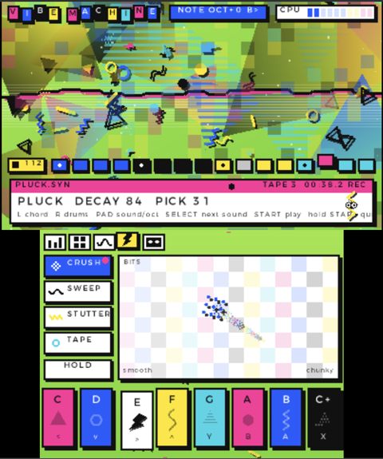
CRUSH, SWEEP, STUTTER and TAPE STOP on an XY pad, recorded into your patterns. The top screen pixelates, freezes and slows down with them.
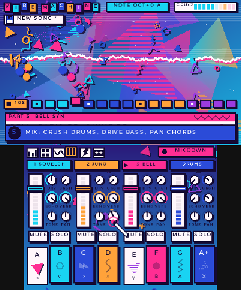
A strip for each part and the drums: fader, meter, drive, crush, tone, pan, echo and reverb sends, mute and solo. MIXDOWN records the whole song to a WAV.
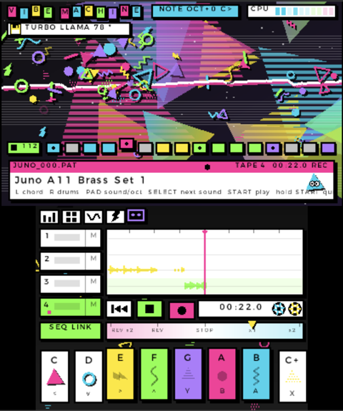
Record the jam or one part at a time, scratch it like a record, play it backwards, vary its speed.
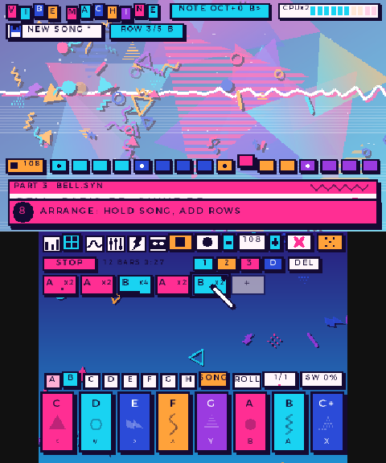
Arrange patterns into intros, drops and breakdowns, save named songs with their tapes and samples, and pick up where you left off.
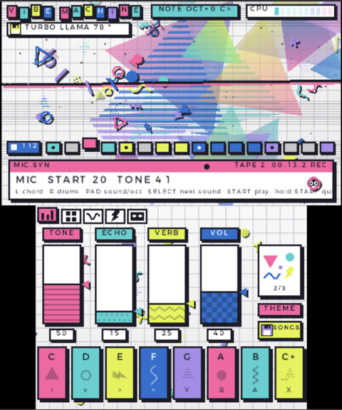
Major, minor, modes, pentatonics, blues: every key stays in scale. Nine colour themes, and real stereoscopic 3D on the top screen.
From the latest release: vibe-machine.cia to install it on the HOME Menu, or vibe-machine.3dsx for the Homebrew Launcher. Free and open source (MIT).
On a 3DS with custom firmware (Luma3DS): install the .cia with FBI, or copy the .3dsx to sdmc:/3ds/. Run the DSP1 homebrew once so the 3DS can make sound.
Start it from the HOME Menu (or the Homebrew Launcher), press START and the starter beat plays. Then open the manual.
It runs in the Azahar emulator too: File → Load File. The README has the one-time setup.